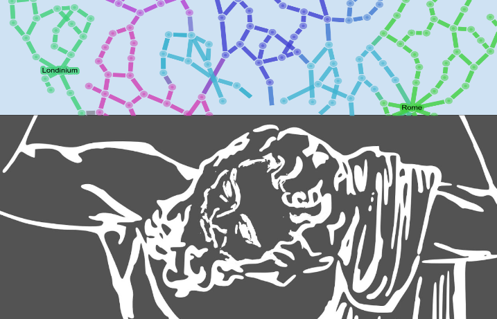

There are, broadly speaking, four expressions of digital humanities scholarship: research utilizing digital objects, tools, and methods; the publication of the products of that research; the creation, extension, and annotation of digital archives; and the development or improvement of digital tools. The boundaries between these are fluid; in particular, some products of digital humanities scholarship blur the line between archive, tool, and publication. ORBIS — the Stanford Geospatial Network Model of the Roman World,1 is one such hybrid. It is an interactive scholarly work (ISW) that comprises a digital archive of sites and routes, a tool for exploring Roman transportation, and an argument about the dynamic shape of the Roman world and the nature of transport within it. Furthermore, it makes a methodological argument that its representations — its computational model and visualizations — are a useful means for reasoning about those aspects of Roman history.
The actual form of ORBIS also blurs some of these boundaries. It is a website with both static and interactive components. Its textual content itself forms an academic article, such as might appear in a print journal. An application programming interface (API) in development will allow users to access the data directly and programmatically, and the site’s interactive components, discussed in more detail here, provide several perspectives on the model itself.

One of the forms of expression of ORBIS is a route-finding interface that affords a user the opportunity to examine the distance, duration, and expense of a trip between any two sites represented within the system.
ORBIS crosses disciplinary boundaries as well. It integrates several geographic network analysis methodologies like least cost paths, cost surfaces, and distance cartograms into a historical project, and it is a platform for research using traditional network analysis in the context of world systems theory.
Built over a nine month period, ORBIS combines location data drawn primarily from the Pleiades project,2 route information from the Barrington Atlas3, and established courses of historically navigable rivers. Together these represent the terrestrial transportation network well, and they were joined with a novel maritime transportation network modeled on the performance of Roman-era ships and using modern wind and sea data. It includes a temporal component that is both detailed and highly abstract. In the first case, ORBIS is extremely time-aware in that both terrestrial and sea route availability and speed can change based on the month of travel. However in another sense ORBIS represents a purely timeless transportation network of Rome, given that it contains no annotation of route availability based on the period of the regime. Taken altogether, it gives prospective readers an expression of the dynamic and contingent shape of Roman world.
When available. Certain routes, such as the desert routes, were missing, and the entire panel for Greece shows no roads, almost as if to argue that Greece was an eco-utopia not ravaged by cruel roadmakers. Available online at http://www.unc.edu/depts/cl_atlas/. Also available in print: Richard J.A. Talbert (ed.), Barrington Atlas of the Greek and Roman World (Princeton: Princeton University Press, 2000). ↩︎